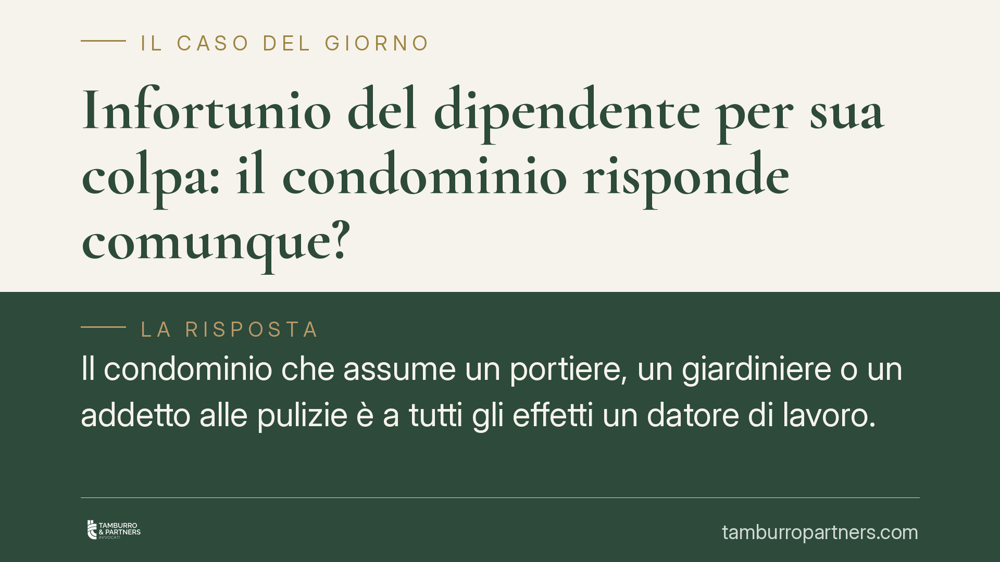

Infortunio del dipendente per sua colpa: il condominio risponde comunque?
Il condominio che assume un portiere, un giardiniere o un addetto alle pulizie è a tutti gli effetti un datore di lavoro. Per questo risponde degli infortuni dei propri dipendenti anche quando il lavoratore si è comportato in modo imprudente. La colpa del lavoratore, infatti, raramente libera il datore. Vediamo entro quali limiti e cosa devono sapere amministratore e condòmini.

Il condominio è un datore di lavoro
Quando il condominio assume personale — portiere, giardiniere, addetto alle pulizie — assume anche tutti gli obblighi che il D.lgs. 81/2008 (il Testo Unico sulla salute e sicurezza sul lavoro) pone a carico del datore di lavoro.
Significa, in concreto, che il condominio deve valutare i rischi, redigere il documento di valutazione dei rischi (DVR), fornire i dispositivi di protezione, formare e informare il lavoratore. Questi obblighi non spariscono perché l'organizzazione è "piccola" o perché l'amministratore ha poco tempo.
La colpa del lavoratore non basta a liberare il datore
Il punto più delicato riguarda l'ipotesi in cui l'infortunio avvenga per imprudenza dello stesso dipendente. La domanda tipica è: se il portiere si fa male per una sua distrazione, il condominio paga lo stesso?
La risposta della Corte di Cassazione penale è, nella grande maggioranza dei casi, affermativa. L'orientamento consolidato muove da un principio preciso: il datore di lavoro deve prevenire anche le condotte imprudenti, negligenti o disattente dei lavoratori. La sicurezza va progettata tenendo conto del fatto che l'uomo sbaglia, si distrae, prende scorciatoie.
Di conseguenza, la semplice imprudenza del dipendente non interrompe il cosiddetto nesso di causalità, cioè il legame tra l'omissione del datore e l'evento dannoso. Se il condominio non aveva adottato le misure di sicurezza dovute, risponde dell'infortunio anche quando il lavoratore ha contribuito con la propria disattenzione.
Il limite: il rischio eccentrico
Esiste però un confine. La giurisprudenza lo individua nel cosiddetto rischio eccentrico (o "abnorme").
Si tratta del comportamento del lavoratore tanto imprevedibile, anomalo ed estraneo alle sue mansioni da collocarsi fuori dall'area di rischio che il datore doveva governare. In questi casi la condotta del dipendente diventa l'unica vera causa dell'infortunio e può escludere la responsabilità datoriale.
L'esempio classico: il giardiniere che, senza alcuna necessità lavorativa, si arrampica su una struttura pericolosa per compiere un'operazione del tutto estranea ai suoi compiti. Qui l'azione esce dal perimetro prevedibile e il condominio può andare esente.
Attenzione, però: il rischio eccentrico è un'eccezione, non la regola. I giudici lo riconoscono con rigore. La distrazione, la fretta, il mancato uso dei dispositivi di protezione restano quasi sempre nell'area che il datore doveva prevenire.
Chi risponde dentro il condominio
Sul piano penale, la responsabilità grava anzitutto su chi riveste la posizione di datore di lavoro. Nel condominio questa figura è normalmente l'amministratore, che gestisce l'organizzazione e dispone delle risorse comuni.
Sul piano civile ed economico, invece, le conseguenze possono riverberarsi sui condòmini. Il condominio non ha personalità giuridica distinta: le obbligazioni contratte per la gestione delle parti comuni — compresi i risarcimenti — ricadono sui singoli partecipanti, in proporzione alle rispettive quote millesimali. In caso di condanna risarcitoria, quindi, l'esborso finisce per gravare sulla collettività condominiale.
Cosa cambia per amministratore e condòmini
Per l'amministratore significa che la sicurezza del personale non è un adempimento formale, ma una responsabilità personale con risvolti anche penali. Per i condòmini significa che ogni risparmio su formazione, dispositivi e manutenzione può trasformarsi in un costo molto più alto in sede di risarcimento.
Cosa fare in concreto
- Verificate la posizione datoriale. Accertate se il condominio ha dipendenti e, in caso affermativo, che tutti gli obblighi del D.lgs. 81/2008 siano adempiuti.
- Aggiornate il DVR. Il documento di valutazione dei rischi deve essere reale, specifico e aggiornato: non un modello scaricato e dimenticato.
- Formate e documentate. Erogate la formazione obbligatoria al personale e conservate la prova scritta delle istruzioni impartite e dei dispositivi consegnati.
- Deliberate le risorse necessarie. L'assemblea stanzi i fondi per sicurezza e manutenzione: consigliamo di mettere a verbale le decisioni.
- Valutate la copertura assicurativa. Verificate l'esistenza e l'adeguatezza di una polizza che copra la responsabilità verso i dipendenti.
La colpa del lavoratore, in sintesi, raramente salva il condominio. La difesa migliore è prevenire: una sicurezza seria sul lavoro è anche la tutela economica dei condòmini.
Ogni condominio ha una storia a sé.
Se gestisci un'amministrazione e vuoi un confronto su una specifica questione condominiale, scrivi allo studio. Ti rispondiamo entro un giorno lavorativo.